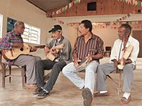

Página inicial > Grupos > Fandangueiros do Continente

Fandangueiros do Continente
quinta-feira 25 de outubro de 2012, por
O Mandira é uma comunidade rural, de caráter familiar, estabelecido desde meados do século XVIII na estrada que liga a região central de Cananéia ao distrito de Ariri. A localidade era propriedade de uma antiga fazenda, cujo dono teve um filho com uma de suas escravas. Após a morte do dono da fazenda, em 1868, a filha legítima do dono das terras as doou para o filho bastardo, Francisco Vicente Mandira. Em 2002, a comunidade foi reconhecida como quilombola. Os fandangos de mutirão eram muito comuns no Mandira e a comunidade dependia essencialmente de atividades rurais até a criação da Reserva Extrativista do Mandira, em dezembro de 2002, como unidade federal de uso sustentável, gerenciada pelo IBAMA.
“Dependia conforme a ocasião do fandango. Tinha o fandango que se fazia assim à toa, tinha de São João, tinha Santo Antônio, tinha São Pedro, Natal. Então, a gente resolvia dançar naquela noite... E tinha também o fandango de mutirão. A gente fazia o mutirão, dava o mantimento, fazia comida. Naquele tempo era difícil, que no sítio quase não tinha mesa grande. O pessoal arrumava uma esteira feita de piri, que é uma planta que dá na beira da água. (...) A pessoa estendia essa esteira bem grande, forrava com pano branco. Ali arrumava o prato, colher, farinha – que nesse tempo todo mundo comia farinha – e a comida. Ali, todo mundo se servia, o gosto que queria, à disposição da pessoa. Tinha as panelas de ferro de pé, panela grande, enchia aquilo tudo de comida, era misturada, a comida que queria: era carne, era feijão, arroz.
Então, quando chegava de noite, a gente pulava no fandango e dançava até de manhã. Quando chovia, a pessoa fazia promessa pra São Gonçalo, se não desse chuva aquele dia, não estragasse a brincadeira e o mutirão, a primeira moda era dele. Então, depois que todo mundo trocava a roupa, jantava, tava todo mundo pronto. Aí tinha o violeiro que tocava a moda de São Gonçalo. E dançava a moda de São Gonçalo e continuava o baile até de manhã. Vinha e dançava assim, de par, eu com ele, homem com uma mulher, que só homem nunca prestou, né? Agora ia lá de frente, quando chegava lá, tinha um copete de flor. O senhor beijava aquela flor e vinha de costas, daqui dava o ziguezague e se encontrava e outra vez lá. Quando chegava lá, beijava, voltava outra vez na mesma luta, até o fim. Depois continuava no baile.” (Frederico Mandira, nascido em 1930, morador da comunidade)
Os instrumentos de fandango eram feitos por João Vicente Mandira (viola) e Cristino Mandira (rabeca), ambos já falecidos, sem deixar sucessores. Apesar de até recentemente o batido ter estado presente nos fandangos do Mandira, são poucos os moradores que ainda sabem dançar o sapateado com tamancos.
“Dançava batido também. Sempre era dois valsados e um batido. Depois, quando foi o tempo, nós fazíamos fandango aqui e tinha um pessoal da beira mar que vinham ver o fandango e não queriam o batido, inclusive muitas vezes deu confusão. Dava briga aqui, mas sempre tinha. Depois foi indo, o pessoal foi desgostando, ninguém quer trabalho, porque o batido dá trabalho, pulando, batendo, sapateando, então, o pessoal largou do batido e só valseado, só.” (Arnaldo Mandira)
Nesta mesma época da criação da reserva extrativista, foi implantado na comunidade, pela Fundação Florestal e pelo Instituto de Pesca, o Projeto de Ordenamento da Exploração de Ostras do Mangue no Estuário de Cananéia,
que passou a ser uma das principais atividades de sustendo dos moradores, somada ao trabalho com artesanato, exercido principalmente pelas mulheres. A comunidade também tem procurado incentivar o turismo no local, ressaltando atrativos como os sambaquis, uma cachoeira e uma casa de pedra do tempo da escravidão.
Atualmente, os mutirões são raros, mas os tocadores se reúnem ocasionalmente. Alguns nasceram no Mandira, mas se mudaram para bairros mais próximos da região urbana de Cananéia, como Porto Cubatão e Itapitangui.
A continuidade do fandango é, entretanto, algo que preocupa os moradores, pois as novas gerações do Mandira, mesmo quando filhos de tocadores, dificilmente têm o mesmo interesse que os pais.
“As idéias da mocidade é muito diferente das da gente, inclusive nós aqui, não só fandango, nós temos o terço cantado que é dos nossos antepassados. A devoção deles, o catolicismo deles, era rezar terço, então, eles tinham muita fé como eu tenho em Santo Antônio, que é o padroeiro aqui do Mandira. Então, nós fazíamos festa de Santo Antônio todo ano, dia 12 tem terço cantado aqui no Mandira, mas não tem um deles aqui que saiba rezar o terço. Só quem reza o terço sou eu. Alguns deles ajudam a cantar o terço, mas nenhum interessa de aprender a rezar. Agora, a gente não pode dizer porque eles se acanham, têm vergonha de rezar, não querem continuar com a tradição que vinha dos antepassados. A gente não sabe dizer, porque a gente não sabe quais as idéias deles, mas que isso aí existe. Nós temos terço e isso está se acabando, porque a nossa juventude não pratica mais. Eles querem aquelas coisas mais influídas.” (Arnaldo Mandira)
Ângelo Mandira, conhecido como Angico, toca rabeca. Nasceu no Mandira, em 1942, e atualmente reside no Porto Cubatão. É filho de Francisco Vicente Mandira e Dolores Mariano de Godoy. É pescador e trabalha também
como guia para turistas que vão ao município pescar. Teve nove filhos. O mais velho toca violão, mas não se interessou por fandango.
“Eu toco rabeca um pouquinho, violino um pouquinho, violão um pouquinho, viola um pouquinho, cavaquinho um pouquinho. Não sei tocar nada, mas mexo com todas as coisas! Como que a gente aprendeu a tocar viola? Foi o seguinte: meu irmão tinha uma viola, ele saía pro serviço e deixava ela trepada lá em cima. Eu subia lá e começava a tocar meio desafinado. Aí, quando eu comecei a mudar o dedo, sem afinar, sem nada, mandei eles afinarem pra mim. Aí, peguei e toquei. Devia ter uns doze, treze anos. E rabeca, eu tinha um tio que tocava rabeca e ele tava tocando e eu ficava olhando. Aí eu aprendi. (...) Rabeca parece que é um instrumento ruim, mas é mais fácil de tocar que qualquer instrumento, mais que a viola. A turma acha que é ruim porque não tem ponto, os pontos tem que fazer.” (Ângelo Mandira)
Rua Francisco Porcelino Franco, nº 310, Porto Cubatão, Cananéia, SP
Ulisses da Silva toca pandeiro. Nasceu em 1963, no Mandira. É filho de Trajano Silva e Maria Mandira da Silva, e sobrinho de Arnaldo Mandira. Mora em Porto Cubatão e é pescador. Teve cinco filhos, mas nenhum aprendeu o fandango.
“Eu tenho meus filhos, eles gostam de música caipira, sabem cantar algumas músicas que a gente ouve, eles cantam, mas a maioria acha que é coisa de velho, não tem uma definição do que gosta, vai mais pelo embalo. Na rádio
você não vê tocar música da região. É só música que você mal entende, rap. Lá no porto está tendo aula de rap, minha filha: “Pai, assina aqui”, eu não posso dizer que não vou assinar a autorização. Fandango ninguém coloca, instrumento caipira. É rap. Então, é mais ou menos isso, tem quem goste, tem quem já não goste.” (Ulisses)
João Teixeira, conhecido como Jango, é violeiro, nasceu em 1950, em Guarapari, no município de Cananéia, e atualmente mora no Mandira. Seus pais chamavam-se Mariano de Almeida e Maria Dália Teixeira. Teve seis filhos e nenhum toca fandango.
"Sou pescador, mas trabalho com criação de ostra". (João)
Fonte: Museu Vivo do fandango


{kind=link}
{kind=link}
{kind=link}
{kind=link}
{kind=link}
{kind=link}
{kind=link}
{kind=link}
{kind=link}
{kind=link}